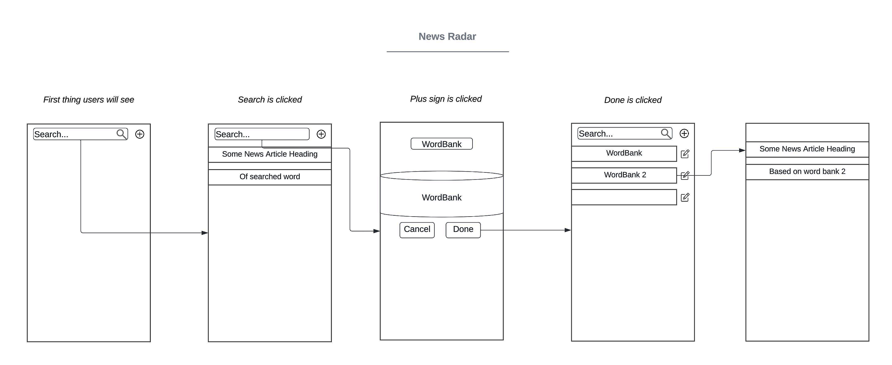
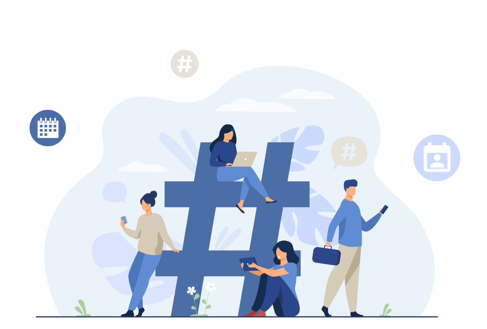

Projects
News Radar
This Android application allows users to stay informed and up-to-date with content curated to their preferences. Users can customize their news feed by selecting specific keywords and interests. News can also be sourced from specific subreddits and/or Twitter users.
Tools: Kotlin
Design Process
01: Ideation
Why? The idea for News Radar is designed to tackle the challenges of online searches. Finding specific topics can be difficult without precise queries and the ability to omit irrelevant terms. The goal is to simplify the process of searching and streamline it, making it easier and more efficient to find exactly what you're looking for.
02: Goals
Wireframing
The most important aspect of creating products using the agile methodology is prioritizing the development and delivery of Minimum Viable Products (MVPs). An MVP includes only the core features necessary to address the primary needs of users, allowing teams to quickly release a functional version of the product. This approach enables rapid feedback collection, iterative improvements, and efficient resource use. By focusing on MVPs, we can validate ideas, adapt to changing requirements, and ensure that the product evolves in alignment with user needs.
Below is a very rough draft on how News Radar would look like.
03: Building and Testing
Product Testing
Once we developed our MVP, we immediately proceeded to testing, including both dogfooding (where we, as developers, used the app ourselves) and user testing. A frequent challenge encountered during both self-testing and user testing was the difficulty in reversing actions. This prompted us to create a cancel button as well as a pop-up to alert users of the actions they are performing. During user testing, I found that many users struggled to navigate through the app, indicating the need for an improved information architecture (IA).
To address this, we analyzed the IA of existing successful news applications and used these insights to restructure our own app. Additionally, we rearranged and enlarged the icons to ensure that users could easily see and recognize them. Our workflow involved building a feature, testing it ourselves and with users, and then revising any flaws. We repeated this process continuously to ensure optimal performance and usability.
04: Publishing the App
SyncSchedule
SyncSchedule is a scheduling platform designed to streamline the coordination of events and appointments with ease and efficiency. Users are able to personalize their calendars to organize tasks and commitments. Users can not only manage their schedules but also collaborate effectively with others. An integrated chat system enables direct communication within the platform, facilitating real-time discussions and coordination among team members or group participants.
Design Process
01: Ideation
Why? Imagine this scenario: You create a group chat to organize a hangout and ask your friends if they are available this coming weekend. However, not everyone reads the message at the same time, resulting in delayed replies. As you try to gather everyone's responses, you keep a mental note of everyone's availability and try to coordinate appropriate time slots. Due to the delayed replies, it becomes difficult to get a clear grasp of what time works for everyone.
Soon, friends start typing out their availability or suggesting times that work for them, and the planning stage becomes increasingly complicated. The process stalls because coordinating a suitable time for everyone becomes too challenging. Unfortunately, this delay can lead to the event being canceled altogether. So how do we bring order in this chaos?
If there’s anything that the majority of the population uses, it’s social media and online calendars. Research shows that about 70% of adults use some sort of online calendar to organize their lives. So why not combine the two to streamline where you have a shared calendar system and you can view each other's schedule.
02: Research
Market Research
The most important thing to recognize when building applications is to solve user pain points. This involves understanding the challenges and frustrations users face and designing solutions to address these issues effectively. By focusing on user pain points, we can create applications that provide real value, enhance user satisfaction, and improve overall user experience. To gain insight into user needs, interviews were conducted with club presidents and everyday students. This approach ensured a comprehensive understanding of diverse perspectives and requirements, informing the development process with valuable, user-centered feedback. Some of the sample interview questions were:
- What tools or platforms do you currently use to manage your club’s activities?
- What is the biggest problem you would say in organizing large group events?
- How do you notify members of the club about where your meetings are held?
- How do you promote your events to ensure high participation?
03: Building and Testing
Dogfooding Testing Practice
With the research done, my team and I had a solid understanding of how we wanted our application to turn out. This project underwent primarily developer testing with limited user testing involved. However, we also utilized heuristic evaluation to refine our layout and design of the application. This process included several heuristic principles to enhance usability and user experience.
For instance, we ensured that the chat system adapted seamlessly to different screen sizes and devices, providing a consistent user experience across platforms. Additionally, we implemented a pop-up/alert system that notifies users when they are about to perform actions that might significantly change the UI, such as deleting data or navigating away from a form without saving. We also followed heuristic principles by maintaining a consistent color scheme for buttons throughout the application, using red for cancel buttons to ensure they are easily distinguishable and recognizable by users.
Furthermore, we integrated features to anticipate and prevent user errors, such as validation checks on forms to ensure that users enter valid login data, thereby minimizing the likelihood of errors during interactions. Moreover, we provided users with ample control over their actions within the application, including an undo feature for actions such as deleting items, and pop-ups/alerts to notify users when they were about to change the UI, allowing them to easily revert accidental changes.
Finally, we maintained consistent terminology, icons, and design patterns across the application, adhering to established industry standards and best practices. Through these heuristic principles, we aimed to create an intuitive and user-friendly application that enhances the overall user experience and satisfaction.
Once we initiated user testing, some users appreciated the idea of a shared calendar system but were concerned about sharing their entire schedule. With privacy in mind, we modified the app to allow users to selectively share events while keeping other events private or restricted to specific people. This approach addressed privacy concerns while maintaining the functionality of the shared calendar system. With these changes and tests, SyncSchedule was officially launched.
04: Final Product
Outcome and Thoughts
Overall, I am very pleased with the outcome of SyncSchedule. It was designed to solve a common problem many encounter when planning group activities. The project provided me with exposure to key UI/UX principles and introduced me to new developer methodologies like Agile and Waterfall. Through this experience, I gained practical knowledge in HTML, JavaScript, and CSS. Moreover, SyncSchedule afforded me valuable leadership opportunities, enabling me to organize tasks and meetings effectively, and giving me a comprehensive understanding of web development.
We Play Tanks! Tanks!
A recreation of the popular Wii game, Wii Play - Tanks! Instead of utilizing the Wii console itself, players will now be able to play with their PCs. Incorporating similar environments and enemies, players will be able to relive their childhood game.

Tools: C#, Unity
CyberSecurity VR Project
A virtual reality simulation of scenarios where players are faced with common social engineering tactics. The purpose of this VR game is to train players to spot and pick appropriate actions to take when confronted with deceptive techniques aimed at manipulating them into divulging sensitive information or performing unauthorized actions. Through immersive experiences, players will learn to recognize red flags, assess risks, and make informed decisions to safeguard themselves against the dangers of social engineering. With interactive decision-making, players will navigate various scenarios, honing their cybersecurity skills in a engaging environment.